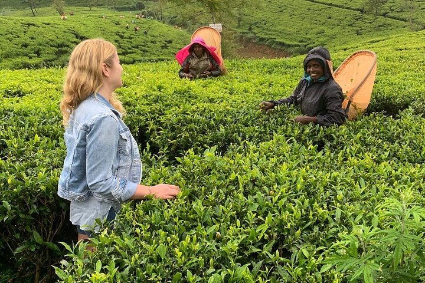
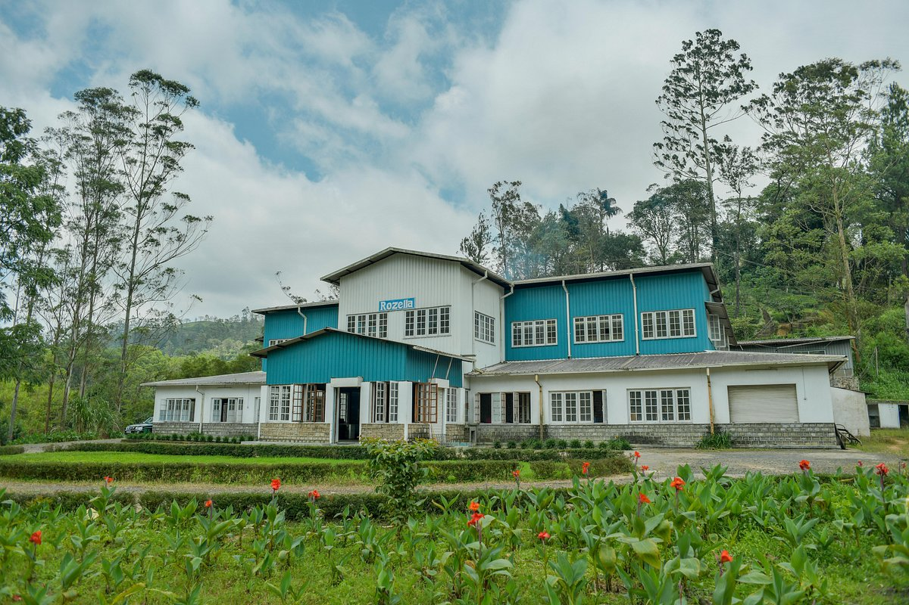
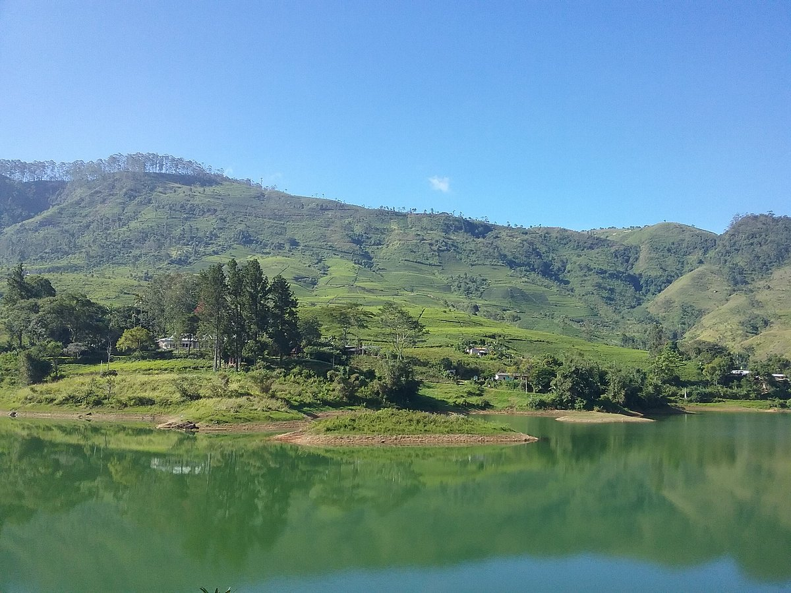
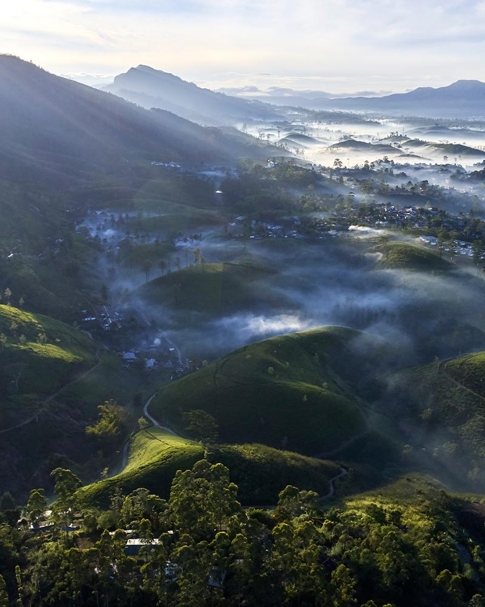

Key Attractions

Explore vast tea estates with lush green plantations, panoramic views, and insights into tea harvesting traditions.

Visit a tea factory to witness tea processing, learn about production, and sample freshly brewed Ceylon tea.

Climb Adam’s Peak, a spiritual pilgrimage with sunrise views and breathtaking highland scenery.

Castlereagh Lake offers scenic walks, birdwatching, and calm waters amidst surrounding tea plantations and mountains.

Enjoy panoramic mountain views across Hatton, ideal for photography and connecting with nature in the highlands.